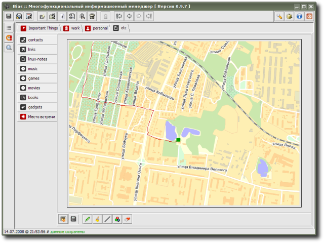

Graffiti - extension to store images with very simple built-in mini-image-editor having only very basic instruments for painting (though, of course, presents possibility to load/save files of common image formats like JPG/GIF/PNG etc.); is suitable for simple "handmade" graphical sketches и schemes; also can be used in cases when some image file should be stored in organizer permanently, but there's a need to make some marks on it from time to time.
Extension is provided by R. Kasianenko, an author of Bias application.
Preview:
